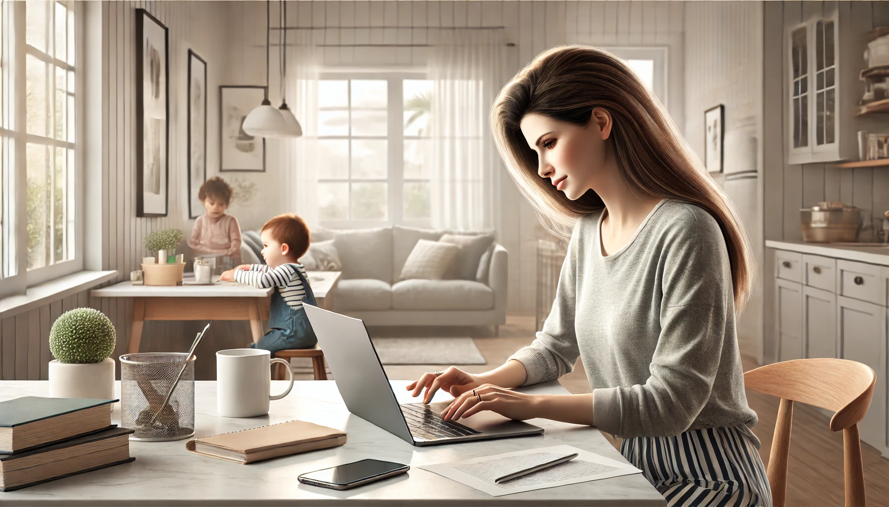

Homeschooling and Working From Home

Balance Without Burnout
Does the thought of juggling a full-time job and educating your kids at home make your head spin? You're not alone. Many parents find themselves walking a fine line between career demands and homeschooling responsibilities.
Thankfully, it is possible to thrive in both with realistic expectations, clear routines, and support systems.In this post, we’ll explore practical strategies to help you balance work and homeschool with less stress and more joy.
1. Set Realistic Expectations
Trying to maintain a 9-5 homeschool schedule alongside professional work is a recipe for exhaustion. Instead, aim for good enough, not perfection.Quick Strategies
➧ Scale academic goals to what’s manageable
➧ Ask yourself
➧ “What’s essential today?”
➧ “What can wait?”
➧ Remember it's okay to slow down or pivot when needed
2. Create a Daily Rhythm That Supports Both Roles
Rather than juggling tasks randomly, design a daily rhythm where homeschooling and work support each other.Sample Daily Flow
Morning
➧ Homeschool time while everyone’s fresh
Mid-morning to early afternoon
➧ Parent works, child does independent or screen-based learning
Early afternoon
➧ Family lunch and break
Late afternoon
➧ Parent finishes work, holds tutoring or small-group slots
Be flexible
➧ like homeschooling, rhythms can and should, shift with your needs.
3. Prioritize Independence in Learning
Your goal shouldn’t be ultra-rigidity, it’s cultivating capable, self-directed learners.Ideas to Boost Independence
➧ Use online programs with video lessons
➧ Deploy workbooks in math, grammar, or writing
➧ Introduce self-check quizzes
➧ Incorporate project-based learning and hands-on kits
Tools like Khan Academy, Prodigy, and Newsela can lighten your load while empowering your child to learn on their own.
4. Lean into Asynchronous and Screen-Based Learning
Technology isn’t a shortcut, it’s a valuable helper.Helpful Resources
➧ Video lessons and interactive apps for core subjects
➧ Recorded lectures or electives for middle and high school
➧ Audiobooks and read-aloud apps during breaks or chores
It’s about freeing your time while enhancing your child’s learning toolkit.
5. Build a Support Network
You don’t have to go it alone especially when your plate’s full.Who Can Help
Your partner
➧ Share or rotate teaching periods
Other homeschool parents
➧ Take turns supervising co-ops or learning pods
Grandparents, friends, sitters
➧ Help with projects or supervised play
6. Use Time Blocking And Flexible Scheduling
Treat both work and homeschool tasks like appointments in a shared calendar.Practical Steps
➧ Block homeschool teaching windows in your calendar
➧ Share visual schedules with your kids
➧ Assign them independent and supervised tasks ahead of time
7. Take Care of Yourself
Burnout is real. Make time for you, so you can show up fully for everyone else.Self-Care Tips
➧ Mini-breaks
➧ 5-minute stretch
➧ walk
➧ journaling
➧ Schedule short walks, exercise, or prayer
➧ Connect with friends or social groups as support
➧ Be flexible, rest is OK
8. Reflect and Adjust Regularly
What works in September might feel impossible by mid-year.Reflection Questions
➧ What rhythms gave the best results?
➧ What drained me? What energized me?
➧ What can I let go of or simplify next week?
Update routines once a month or quarter to match changing needs.
Final Thoughts
Working from home and homeschooling simultaneously isn’t easy but it’s absolutely doable. With realistic goals, smart routines, supportive tools, and a caring mindset, you can create a life where your work and your kids both thrive.
Remember you’re teaching your kids more than academics, you’re modeling balance, resilience, and adaptability.Read ☛ “Homeschooling Multiple Ages: Juggling Kids at Different Grades” We’ll explore practical ways to teach siblings with diverse needs and levels - without losing your mind.
About Blossomings
Blossomings is an educational platform dedicated to providing high-quality
English learning materials, worksheets, and structured lessons for learners worldwide.
Our goal is to make learning English simple, engaging, and accessible for everyone.